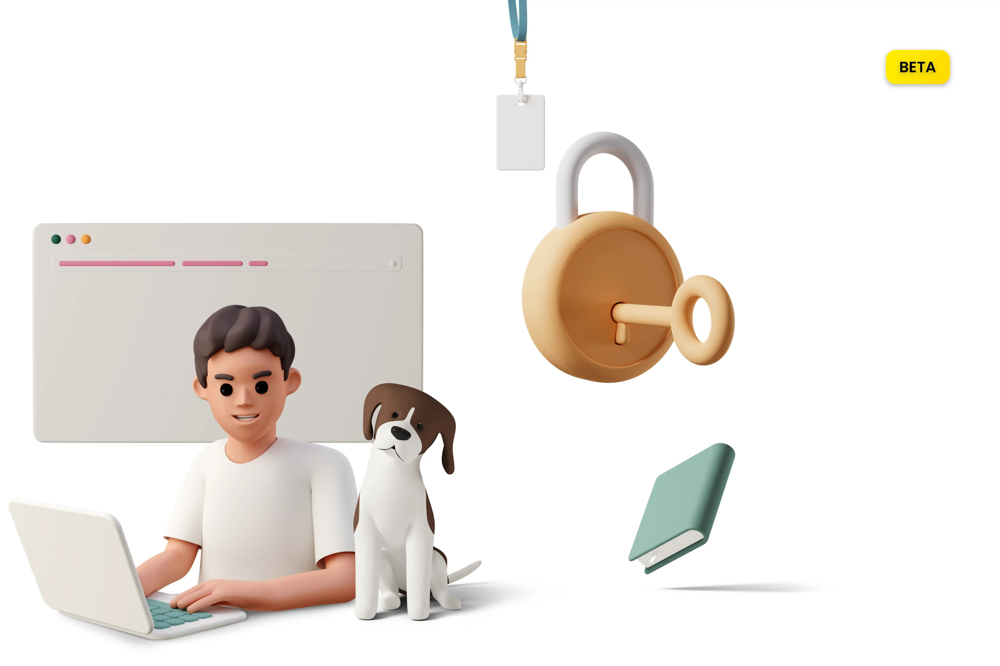

Find free open sourceapplications for
business and home. The programs use modern web technologies and common
platforms.
The applications will continue to be developed. And most times you do not have to install any apps or
programs on your
laptop or tablet because the apps work with most browsers.
Check this out...
Wervice Whitespace - Online Desktop Emulator

Wervice Whitespace is an cross-plattfotm desktop system for, that works im any browser. It should
help
people, who only have an old computer or a tablet and need fast-working and simple-running
applications.
No To Go - Private messages
Encrypt your social messages easily. Your recipient has to decrypt them
first. E.g. when your messages are shown on your friend's start
screen, no one can read them to go. Use the free Webapp to encrypt and decrypt them with only a
few short taps.
Interline Word - Text Editor
Write, print and share text everywhere on a tablet, laptop or
desktop. Use InterlineText to write your text easily. Connect InterlineText simple with InterlineCode
or Wervice Dashboard.
Workspace Files - Manage your WS-Files
Rename, delete and open your Webspace Files. Use WS Files to manage your
Webspace files and your Webspace Registry.
Wervice Open Source - Reuse & Fork the code
Are you interested in the source code of the apps and tools? You can read, copy and edit the code on GitHub.
The web techs
The apps use common web technologies like HTML, CSS and JavaScript. The hosting of the apps works using GitHub Pages.
From time to time, other third-party elements such as Icons8 are also installed in the applications.